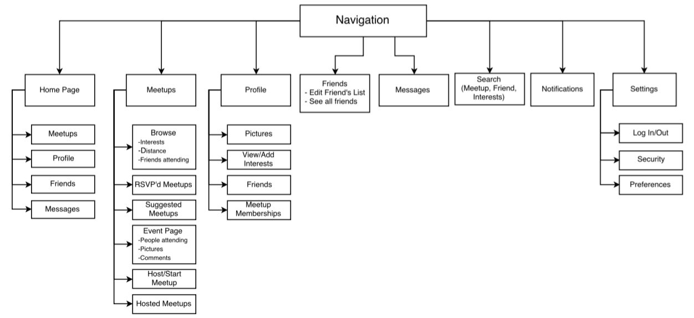

A Friendly Addition to Meetup.com
In 2017, I completed a 100 hour UX Design intensive training to improve my research knowledge and design process. My final project was to develop a new product or improve an existing one through research, testing, and design.
The project I chose to undertake was the reimagining of a popular networking platform, Meetup.com, by integrating new social networking functions that would include improving profile page content, the ability to connect with new people within the platform, and the ability to explore new interests based on these new connections.
To discover if the project had viability and interest, I surveyed 30 people distributed throughout existing platforms, including Facebook, Meetup, and Reddit. The findings revealed that many users found Facebook too revealing and familiar to use when connecting with strangers, while LinkedIn felt too formal. This left an opening in the market for a casual profile that can be used to meet new people without revealing much personal information.
By dissecting and analyzing the survey data, I created a set of User Personas that I used to guide the direction of this project. They represented 3 main archetypes of people use Meetup: Professional Networkers, Socializers, and Skill Builders.
Each persona has individual motivations and personalities, which affect their goals and how they interact with the platform.
Once I had brainestormed the features of an MVP (Minimum Viable Product), I enlisted volunteers for a card sort and created a site layout from the results where each feature is found.

Using Sketch, Invision, and a little bit of Photoshop, I created a navigable prototype to test basic user interaction. You can view the prototype here.
I gathered user feedback from sharing their screen so that I could take notes on their interactions. More imporantly, I had them think aloud and explain their thought process as they interacted with the site.
This page is only a brief summary. To read an in-depth discussion about the project, please visit the article on Medium.com.